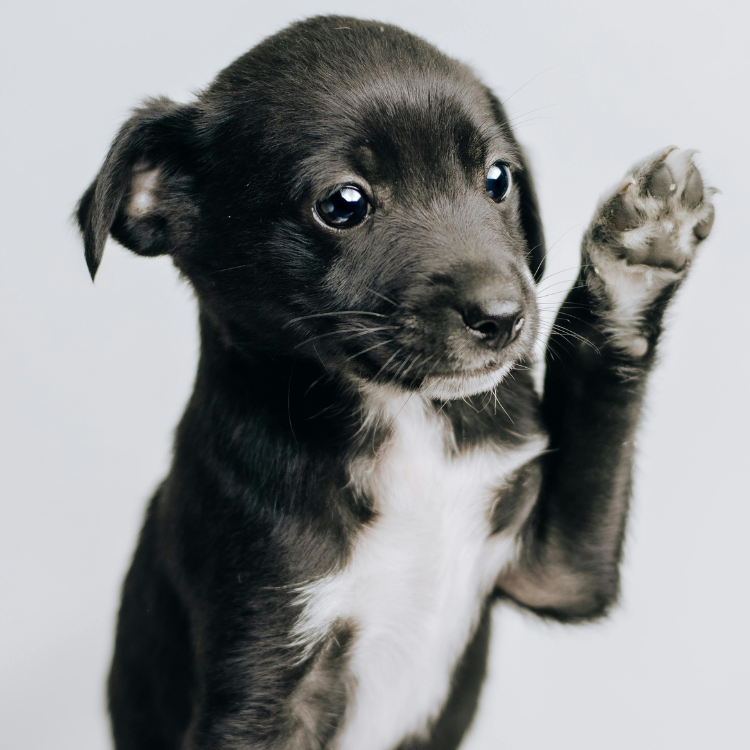

Lively puppies can tread on cold snow with their four paws, glide over frozen ponds, or frolic in snowdrifts. However, if humans were to walk barefoot in such cold places, their skin could get frostbitten. Japanese scientists have discovered that the reason dogs can move freely in the snow without getting frostbite is related to the structure of the blood vessels in their paws.
Scientists found that dogs’ paws don’t freeze because the vascular structure in their paw pads can maintain an appropriate temperature, thereby preserving body heat and preventing heat loss from the sparsely haired paws. The arteries and veins in dog paws are closely aligned, forming a mechanism called “counter-current heat exchange.” This mechanism allows the warm arterial blood flowing to the paw pads to heat the returning cool venous blood, keeping the paws warm.
The counter-current heat exchange system is also found in other animals, such as penguins, whales, and seals, which use this mechanism to maintain body heat. Research shows that dog paws also have a similar system that can regulate blood flow in different temperature environments, ensuring the paw pads do not get frostbitten.
Most dogs have five toes on their front paws and only four on their hind paws. The fifth toe on the front paws usually doesn’t touch the ground and is primarily used for clipping nails. This toe is called a dewclaw and exists in the dog’s genes, hinting at their evolutionary history.
Around 47 million years ago, an animal named Miacis is believed to be the common ancestor of today’s feline and canine species. These animals originally had five toes, suitable for climbing trees. However, as evolution progressed, some Miacis were forced to leave the forests and live on the plains. To run more nimbly on the plains, their fifth toe gradually regressed, becoming today’s dewclaw.
Although dewclaws have no practical use today, they still exist in dogs as part of their evolutionary history, reminding us of their ancestors and their evolutionary path. The dewclaw also tells us that dogs and cats share a common ancestor, even though today’s cats don’t seem particularly interested in acknowledging their distant relatives.
These secrets about dog paws help us better understand their adaptability and evolutionary journey in extreme environments. Dog paws are not just tools for walking; they are also important evidence of their survival and evolution.
Dogs often paw at their owners to get attention, whether they want to be petted, played with, or given food. This behavior usually occurs when the owner is ignoring the dog.
Dogs may gently paw at their owners to show affection and intimacy. It’s a gentle way for the dog to feel closer to its owner.
Dogs might paw at you to express a need, such as wanting to go for a walk, drink water, or eat. It’s a non-verbal way to communicate their needs to the owner.
When dogs feel anxious or uneasy, they may paw at their owners for comfort and a sense of security. This behavior is often accompanied by other signs of anxiety, such as whining or trembling.
Some dogs paw at people to invite interaction, like playtime, training, or other activities. It’s a way to express their energy and excitement.
Some dogs imitate human behavior. For example, if they see their owner touching objects or petting them with their hands, they might use their paws to mimic this interaction.
During training, if a dog has been rewarded for pawing behavior, they may associate the action with receiving rewards and use it frequently to get what they want.
Want to gain a deeper understanding of dog behavior and how to care for them? Click the link below to read more related articles. read more related articles
Looking for products for your cat or dog? Check out the articles linked below for more information and recommendations. Explore more articles